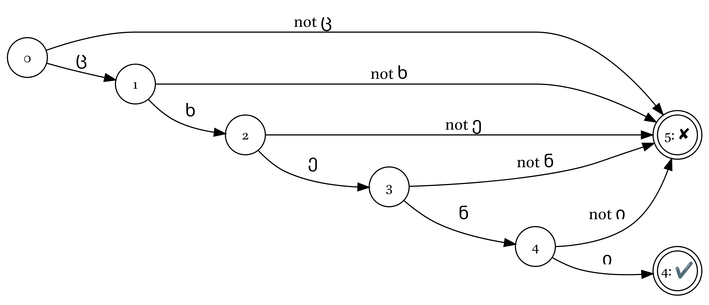
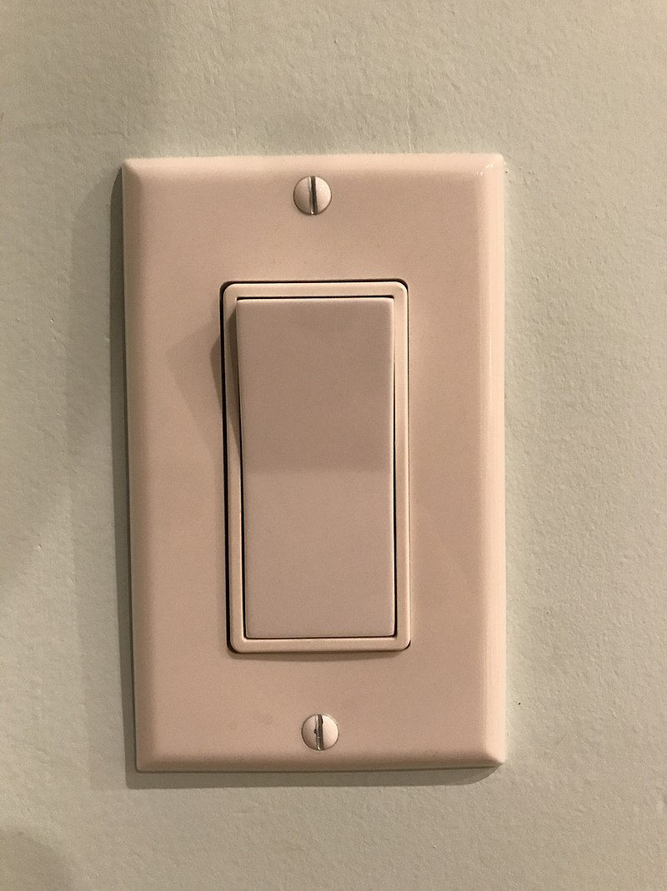
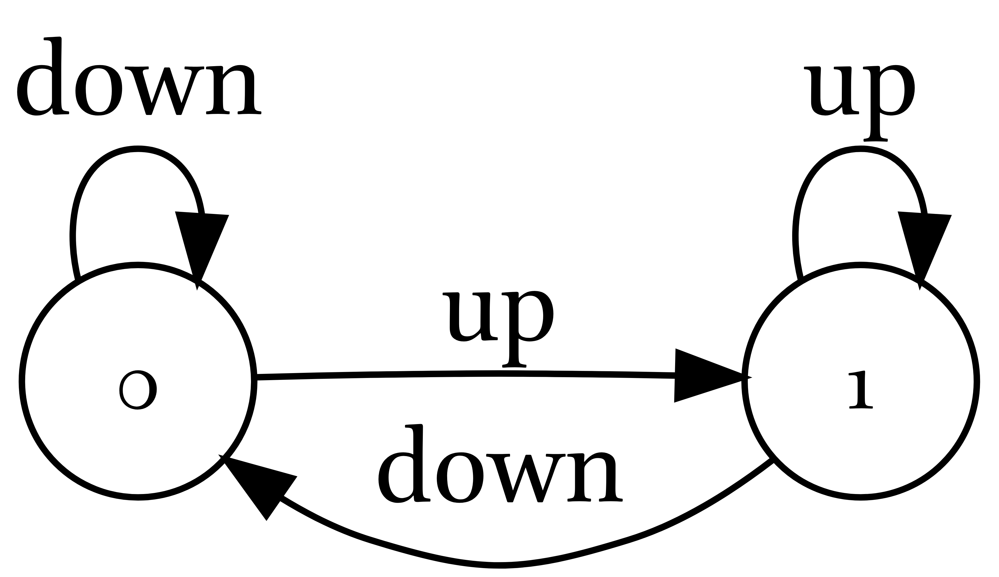
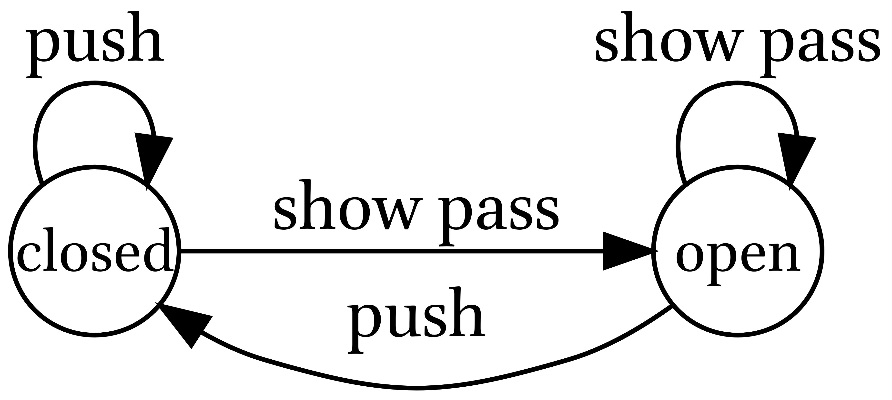
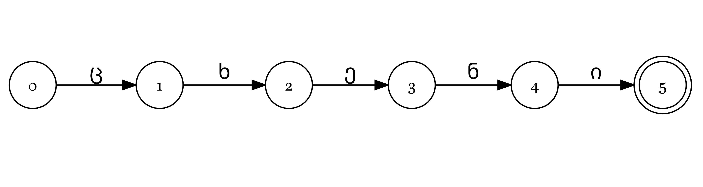
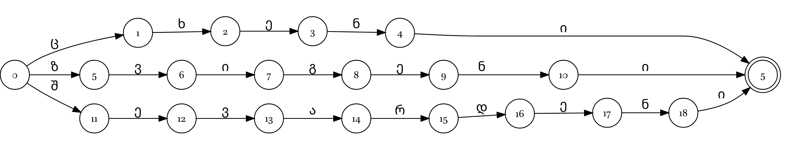
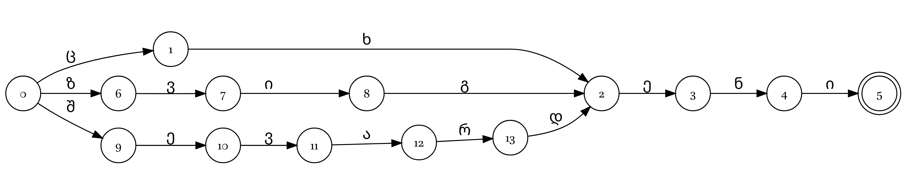
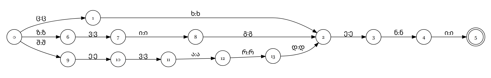
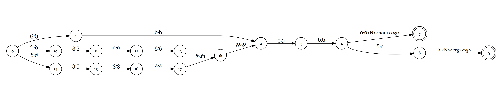

2 What is FST?
Finite-state transducer can be used in order to create rule based morphological parsers. A parser built with these tools can handle both analyzing and generating forms within the same set of rules. It’s important to remember that there is no one single “correct” way to analyze morphology; it depends on what you need. Because of this, creating an FST analyzer is like create a digital representation of a grammatical description and a dictionary into a computer-readable format.
What are the alternatives:
- parser from SIL Fieldworks;
- non FST rule-based approach by T. Arkhangelskiy (Arkhangelskiy 2012);
- morphological parsers that are specific for some languages (e. g.
mystemfor Russian); - Neural Networks, but adjusting those systems is much more complicated than tweaking rule-based models.
2.1 What is morphological analysis?
Morphological analysis involves defining a word’s grammatical form, identifying its base root, and translating the stem meaning. For example, Georgian მინდვრის [mindvris] is linked to the gen.sg form of the stem მინდორი [mindori], which means ‘meadow’. Depending on their goals, linguists emphasize different parts; theoretical researchers typically focus more on translatings stems and don’t provide the stem itself.
2.2 Finite-state machine
Finite-state machine (or automaton) is a mathematical model. FSM can be in exactly one of a finite number of states at any given time. The FSM can change from one state to another in response to some inputs; the change from one state to another is called a transition.



The most important that FSM consists of:
- alphabet that can trigger some transition;
- finite number of states;
- transitions between states;
- one initial state (often denoted as
0); - set of the final states (often denoted with the double circle).
If the program handled the full path to the final state (double circle), then we have success, otherwise it failed. Usually failure path are not displayed.

It is possible to store multiple words:

As you can see there is a room for the optimisation:

It is useful to mention, that there is another way of representing the FSM. This called ATT format:
| initial state | final state | input |
|---|---|---|
| 0 | 1 | ც |
| 1 | 2 | ხ |
| 2 | 3 | ე |
| 3 | 4 | ნ |
| 4 | 5 | ი |
| 0 | 6 | ზ |
| 6 | 7 | ვ |
| 7 | 8 | ი |
| 8 | 2 | გ |
| 0 | 9 | შ |
| 9 | 10 | ე |
| 10 | 11 | ვ |
| 11 | 12 | ა |
| 12 | 13 | რ |
| 13 | 2 | დ |
2.3 Finite-state transducers
So far, we have only used Finite State Machines to accept or reject input words. Now that we are adding both input and output units at each state—making it a Finite State Transducer—we need to change how we write things: list inputs before the colon, followed by outputs after it.

Let’s add some morphology:

This is what this FST does:
| input | output |
|---|---|
| ცხენი | ცხენი<N><nom><sg> |
| ზვიგენი | ზვიგენი<N><nom><sg> |
| შევარდენი | შევარდენი<N><nom><sg> |
| ცხენმა | ცხენი<N><erg><sg> |
| ზვიგენმა | ზვიგენი<N><erg><sg> |
| შევარდენმა | შევარდენი<N><erg><sg> |
FST can be used for
- morphological analysis
- transliteration/transcription (with some limitation)
- predict
- predictive text
- spellchecking
- translation between geneologically closed languages
- speech recognition
- …
2.4 Problems while modeling morphology with FST
- Language descriptions:
- incompleteness
- whatever some researcher decided to put in the grammar may be insufficient for the modeling morphology;
- some languages can lack grammatical description/dictionary
- dictionary can contain incomplete information about inflectional classes
- source contradictions:
- grammatical descriptions can contradict to each other
- grammatical description can contradict to data from the dictionary
- incompleteness
- Variation problems:
- intraspeaker and interspeaker variation
- dialectal variation
- sociolinguistic variation (gender, age, social status, …)
- Homonymy
- lexical
- morphological
- syntactic
- …
- Idioms (Love thy neighbor) and suppletion
- Word Formation Cycles: (e. g. verb > masdar > verbalizer > verb)
- Morphological complexity: it is much easier to build a simper tool for a language with a poor morphology
- Technical complexity: all software is written for Linux (with the exception of one Python library
hfst-dev) - Collaboration Challenges: Working together can be difficult; pairing a computational linguist with an experienced language expert is generally preferred in most cases